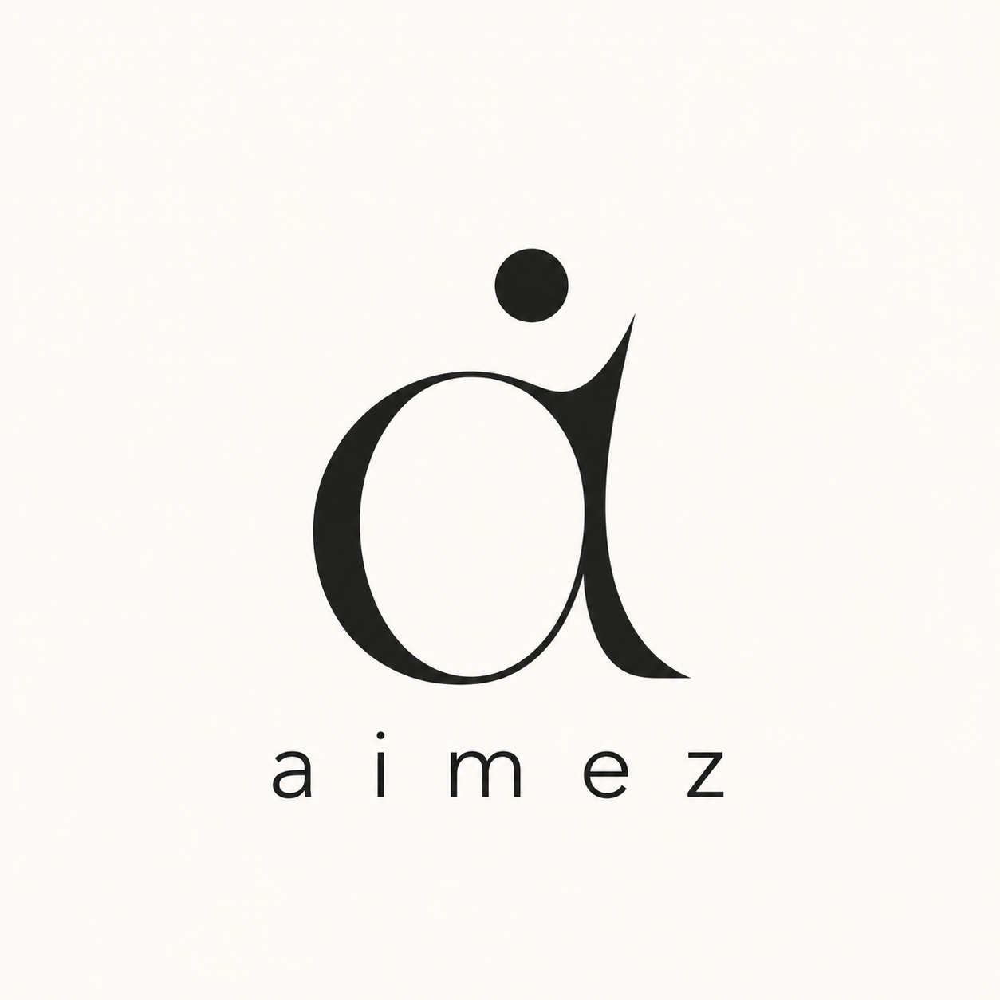

City evidence models
Manhattan is the pilot study for measured stress fields, route cost, loop structure and pedestrian conditions. Field-JEPA adds a predicted crowding layer beside the current-cycle measured field.

evidence models for physical systems
projects · Klosr · Orca Strike · repo · contact
aimez builds evidence models and tools for decisions about complex physical systems. The work turns sparse observations, physical constraints and audit records into representations that can be inspected before they guide a route, forecast or research artifact.
The company works on the evidence gap between complex physical environments and the records available when people make decisions. Each project starts with a concrete representation problem, then publishes the artifact, paper or public module that exposes the boundary of the evidence.
Klosr is a city-scale evidence model for pedestrian conditions on Manhattan. Sparse observations fuse onto a walk graph with layer gates before route costs combine.
Comfort-aware routing is one application on that representation. Five cost encodings read the same evidence layers to compare shortest, crowd-avoiding, shade-seeking, comfort-aware and adaptive routes. Every narrated value is labeled live, partially live or deferred.
A pedestrian camera network that samples every 30 minutes builds a detailed record of street conditions, but that record is always of conditions 30 minutes ago. When the 08:00 cycle closes, it contains what the cameras observed from 07:30 to 08:00, and a decision that depends on conditions at 08:30 has nothing measured to consult. Field-JEPA is an experiment on forecasting the next crowding field from that measured cycle without waiting for the next cycle to close.
The live application hosts remain in limited access while the public release prepares. The public surface below is the Field-JEPA holdout timelapse. Research note and whitepaper stay linked as text.
Field-JEPA forecast · Whitepaper (PDF) · Neighborhood access research
orcast is an evidence-gated encounter forecasting research platform for Southern Resident killer whales in the Salish Sea. A kernel intensity model with validation gates and provenance keeps displayed confidence tied to held-out skill. The research workbench covers biologging-driven 3D reenactment and hydrophone views. Public launch is planned for this summer.
Application hosts remain in limited access until that release. The public module below is Orca Strike.
Public interactive surfaces for Klosr and orcast while application hosts stay limited-access.

Beating persistence on Manhattan’s next half-hour of crowding. Holdout-day timelapse of continuous Field-JEPA and observed crowding-sigma flowfields. Left panel is the model forecast; right panel is the held-out observation for the same cycle. Day of week and local time sit between the panels and advance on half-hour ticks. Color encodes crowding sigma σ, the global percentile rank of bias-corrected density, with a floor near 0.28 and the densest conditions near 1.0.
On the full-island B cohort (339 cameras), Field-JEPA reaches 0.090 MAE at +30 minutes against a persistence bar of 0.105, a 14.2% reduction on a single held-out day (2026-06-29). The sigma field predicted here is a research result on Klosr’s crowding evidence layer, not a deployed routing feature.

Persistence · Field-JEPA · Observed. Crowding sigma at +30 minutes as a continuous shoreline-clipped flowfield for a single holdout cycle. Persistence carries the last observed field unchanged; Field-JEPA shows the +30-minute forecast; the holdout panel shows what was observed.

Route overview · fork metrics · block shade evidence. Two origin–destination pairs. Column 1 shows the route field; column 2 shows divergence metrics (not a map close-up); column 3 shows sealed top-down shade volume on Greenwich St tax blocks (W12–Perry, 2026-07-01 14:00). Modeled shade and surface temperature, not measured pedestrian-height air.
Village row: Washington Sq dog run ↔ Gansevoort Peninsula; length vs shade-weighted exposure across 50 routes.
Midtown row: Grand Central → Carnegie Hall; shortest vs adaptive on crowding-sigma among five engines.
Shade panels cite FSS W5 ACCEPT manifest scene_manifest_greenwich_st_w12_perry_comparison_v1.
Path index: assets/klosr/route-shade-2x3/INDEX.html.
Manhattan is the pilot study for measured stress fields, route cost, loop structure and pedestrian conditions. Field-JEPA adds a predicted crowding layer beside the current-cycle measured field.
orcast publishes gate-bounded encounter forecasting and claim-to-evidence binding for wildlife observation data, with Orca Strike as the current public interaction surface.
Developer tooling work studies moderator-led agent sessions, explicit handoffs and check records for long-running research work.
Occasional notes on demos, papers and public artifacts from aimez.
Join research updatesProject inquiries, institutional contact, event invitations and research collaboration.
Start a conversationPatent pending. Broader diagnostic-infrastructure concepts in the research program are the subject of a filed U.S. provisional patent application. The public materials here are a research demonstration.